60
CAPÍTULO 2 - Multiplicação e divisão de números naturais
Multiplicação
Situação 1
Mariana faz aula de natação duas vezes por semana. A piscina que utiliza tem 18 metros de comprimento. Durante a aula, a cada ida e volta que completa na piscina, ela separa um flutuador no divisor da raia. Quando chega ao final da aula, ela conta o total de flutuadores separados e, então, calcula quantos metros nadou.
Veja nas cenas a seguir uma dessas aulas.
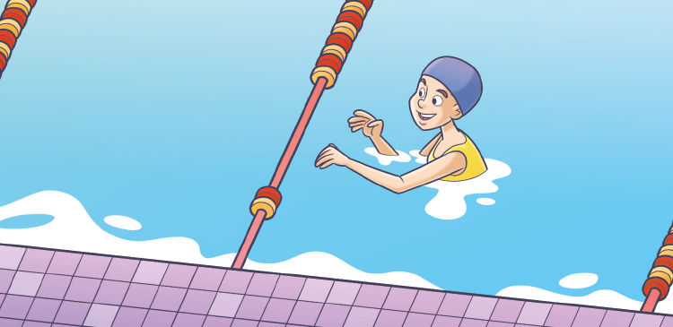 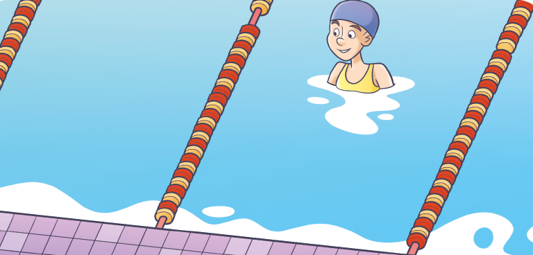Reinaldo Rosa/Acervo da Editora

1. Troque ideias com seu colega e respondam em seus cadernos às questões.
a) Como podemos calcular quantos metros Mariana nadou nessa aula?
b) Quantos metros Mariana nadou nesse dia?
61
Situação 2
O irmão de Mariana também faz aulas de natação. Porém, a piscina em que ele nada tem 25 metros de comprimento. Nesse mesmo dia, ele nadou 52 piscinas. Quantos metros ele nadou?
Para saber o quanto ele nadou podemos realizar uma multiplicação, observe:
Algoritmo usual:
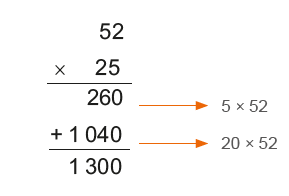
Algoritmo por decomposição:
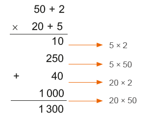
Note que 52 × 25 é o mesmo que adicionar 52 vezes o 25, ou seja,
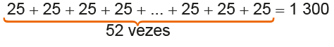Ele nadou 1 300 metros.
A multiplicação é uma operação matemática que está associada às ideias de adicionar parcelas iguais, de quantidade de combinações, de propor-cionalidade e de contar elementos em uma organização retangular.
Os termos da multiplicação são:

Há dois símbolos que podem ser usados para representar a multiplicação, observe:
25 × 52 = 25 ∙ 52 = 1 300
62
Situação 3
Após a aula, Mariana sempre faz um lanche na cantina da escola de natação. Veja na placa as opções de sucos, sanduíches naturais e gelatina que o estabelecimento oferece.

Reinaldo Rosa/Acervo da Editora
Se Mariana escolhe sempre um suco, um sanduíche e uma gelatina, quan-tas possibilidades de lanches diferentes ela tem?
Observe:


63
Mariana tem 18 possibilidades diferentes de lanches.
Essa situação também pode ser representada por meio de uma multiplicação:
3 × 2 × 3 = 18
Situação 4
Mariana e seu irmão gastam 12 reais por dia para ir à escola de natação. Quantos reais eles gastam em uma quinzena?
Em uma quinzena eles têm quatro dias de aula de natação. Então:
1 dia → 12 reais
2 dias → 24 reais
3 dias → 36 reais
4 dias → 48 reais
Podemos representar essa situação por uma multiplicação:
4 × 12 = 48
Mariana e seu irmão gastam 48 reais por quinzena para irem à aula de natação.
Situação 5
Na escola de natação, uma das piscinas está fechada porque estão trocando o piso ao lado da piscina. Observe: Reinaldo Rosa/Acervo da Editora
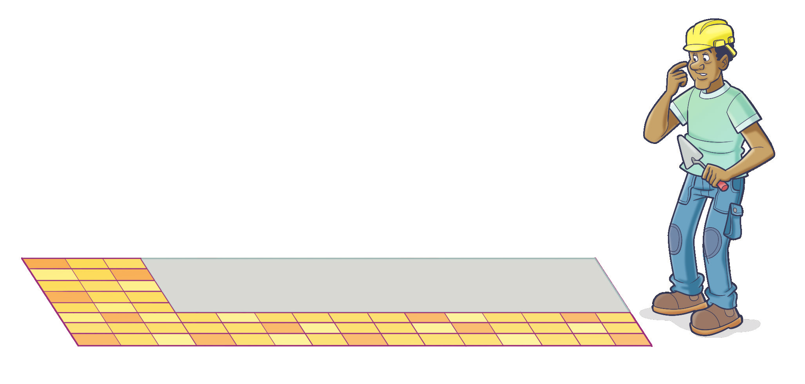Para sabermos quantas lajotas ainda faltam para serem colocadas, podemos fazer:
5 × 12 = 60
Portanto, ainda faltam 60 lajotas para serem colocadas.
64
ENCONTRE SOLUÇÕES
1. Lúcia recebeu uma encomenda para fazer 120 pães de batata para uma confeitaria. Veja a seguir a receita para fazer 40 pães.

Pão de batata
Ingredientes
- 4 ovos
- 4 batatas grandes
- 30 g de fermento
- 4 colheres de sobremesa de óleo
- 2 colheres de sopa de margarina
- 1 colher de sobremesa de sal
- 1 copo de leite
- 1 xícara de chá de açúcar
- 700 g de farinha de trigo
► Registre, no caderno, a quantidade de ingredientes que ela irá precisar para fazer os 120 pães.
2. Em seu caderno, represente as adições a seguir por meio de uma multiplicação.
a) 34 + 34 + 34 + 34 + 34
b) 105 + 105 + 105 + 105 + 105 + 105
c) 67 + 67 + 67 + 67
3. No caderno, calcule as multiplicações a seguir.
a) 136 ∙ 19
b) 408 ∙ 25
c) 374 ∙ 111
d) 1 247 ∙ 13
4. Mônica tem uma loja de doces na qual vende diversas caixas de bombons. Veja a seguir algumas destas caixas.
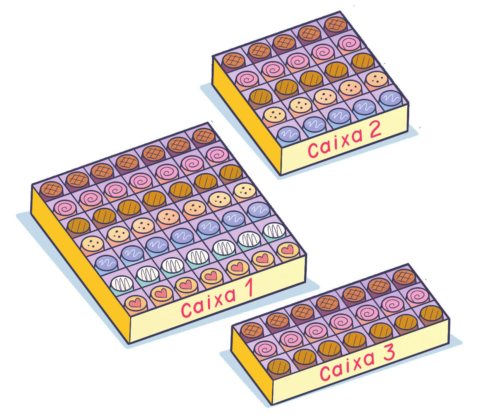► Em seu caderno, represente por meio de uma multiplicação a quantidade de bombons que há em cada caixa.
5. Júnior tem 65 bolinhas de gude, Marcos tem o triplo da quantidade de Júnior e Bruno tem o dobro da quantidade de Marcos. Quantas bolinhas de gude tem Bruno?
6. Na cantina da escola em que Luiz estuda, há 3 sabores de sucos e 5 tipos de salgados. Quantas possibilidades de escolha Luiz tem para 1 suco e 1 salgado?
7. Uma loja resolveu codificar seus produtos usando uma vogal e um algarismo (de 0 a 9). Por exemplo: produto A0 e produto A1. Quantos códigos serão possíveis formar?
65
8. Veja como Manuela pensou para calcular mentalmente 36 ∙ 2.

Observe o raciocínio que Manuela teve:
36 ∙ 2 = 30 ∙ 2 + 6 ∙ 2 = 60 + 12 = 72
► Faça como Manuela e calcule mentalmente as multiplicações a seguir.
a) 45 ∙ 2
b) 102 ∙ 3
c) 73 ∙ 4
d) 110 ∙ 5
e) 32 ∙ 50
f) 41 ∙ 20
9. (OBMEP) Na adição abaixo, o símbolo ♣ representa um mesmo algarismo. Qual é o valor de ♣ × ♣ + ♣ ?

a) 6
b) 12
c) 20
d) 42
10. Roberto comprou um refrigerador e deu 235 reais de entrada e o restante pagou em 6 parcelas de 210 reais. Quanto custou esse refrigerador?
11. Calcule mentalmente.

a) 87 ∙ 10
b) 108 ∙ 10
c) 95 ∙ 100
d) 336 ∙ 100
e) 54 ∙ 1 000
f) 281 ∙ 1000
12. Uma escola tem 12 turmas nos anos finais do Ensino Fundamental. Se cada turma tem, em média, 34 alunos, quantos alunos, aproximadamente, têm os anos finais do Ensino Fundamental?
13. Todos os dias, no restaurante de Juliano, são oferecidas na hora do almoço, 3 opções de salada como entrada, 2 opções de pratos principais com carnes diferentes e 3 opções de sobremesa. Um cliente que almoça todos os dias nesse restaurante terá quantas possibilidades de refeição escolhendo sempre uma salada, um prato principal e uma sobremesa?
14. Em um supermercado há 38 pacotes de 5 kg de arroz cada um. Sabendo que o quilograma do arroz custa 3 reais, quantos reais o dono desse supermercado faturará ao vender todos os pacotes?
15. Utilizando a decomposição, calcule as operações a seguir.
a) 28 ∙ 15
b) 145 ∙ 23
c) 76 ∙ 44
d) 21 ∙ 41
e) 102 ∙ 48
f) 14 ∙ 91
g) 25 ∙ 25
h) 54 ∙ 46
16. Com uma calculadora, quais as teclas que você pode usar para encontrar o resultado 2 400 usando somente a operação de multiplicação e as seguintes teclas:
17. Quais teclas podem ser usadas para encontrar o resultado da multiplicação 4 · 5 sem usar a tecla de multiplicação?
18. Observe as imagens a seguir.
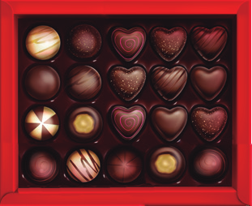 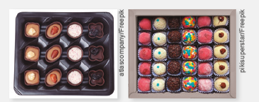► Em seu caderno, elabore um problema sobre multiplicação de números naturais usando as imagens como referência. Em seguida, troque seu caderno com um colega para que ele resolva o problema elaborado por você. Juntos, verifiquem se os problemas resolvidos estão corretos.
Propriedades da multiplicação
Observe as seguintes multiplicações:
23 ∙ 15 = 345
15 ∙ 23 = 345
Note que ao trocarmos a ordem dos fatores o resultado final não se altera.
Na multiplicação de dois números naturais, a ordem dos fatores não altera o resultado final. Esta é a propriedade comutativa da multiplicação.
Agora, observe duas formas diferentes de realizar as seguintes multiplicações:

Note que ao associarmos os fatores de modos diferentes não se altera o produto. Na multiplicação de três ou mais números naturais, podemos associar os fatores de maneiras diferentes que o produto não se altera. Esta é a propriedade associativa da multiplicação.
Vejamos a seguir outra propriedade da multiplicação.
35 ∙ 1 = 1 ∙ 35 = 35
1 ∙ 79 = 79 ∙ 1 = 79
Note que ao multiplicarmos o número 1 a qualquer número natural, o resultado é o próprio número. Esta é a propriedade do elemento neutro da multiplicação.
67
Agora, veremos como calcular outro produto.
3 ∙ (12 + 22) =
= (12 + 22) + (12 + 22) + (12 + 22) = → aplicando a definição de multiplicação
= 12 + 22 + 12 + 22 + 12 + 22 = → aplicando a propriedade associativa
= 12 + 12 + 12 + 22 + 22 + 22 = → aplicando a propriedade comutativa
= 3 ∙ 12 + 3 ∙ 22
Logo, temos que:
3 ∙ (12 + 22) = 3 ∙ 12 + 3 ∙ 22
Em uma multiplicação de um número natural por uma adição de duas ou mais parcelas, obtemos o mesmo resultado que adicionando os produtos da multiplicação de cada uma dessas parcelas por esse número natural. Esta é a propriedade distributiva da multiplicação.
1. Nas expressões a seguir, identifique qual foi a propriedade aplicada.
a) 36 ∙ 45 = 45 ∙ 36
b) 1 ∙ 5 = 5
c) 18 ∙ (23 + 44) = 18 ∙ 23 + 18 ∙ 44
d) 25 ∙ (10 ∙ 13) = (25 ∙ 10) ∙ 13
2. Resolva as expressões em seu caderno, aplicando a propriedade distributiva.
a) 8 ∙ (13 + 17)
b) 11 ∙ (10 + 22)
c) 21 ∙ (19 - 15)
d) 35 ∙ (24 - 8)
3. Leia o texto abaixo.
Uma das maravilhas do cálculo: podemos formar um número qualquer empregando apenas quatro quatros. (Malba Tahan).
Forme duas expressões numéricas usando, obrigatoriamente, quatro quatros e utilizando, no máximo, três operações (adição, subtração, multiplicação), tendo como resultado números de 0 a 10. Exemplo:
4 + 4 - 4 - 4 = ou 44 - 44 = 0
= 8 - 4 - 4 =
= 4 - 4 =
= 0
Temos, então, quatro quatros formando expressões numéricas em que o resultado é igual a 0 (zero). Agora é a sua vez!
Júlio César de Melo e Souza (Malba Tahan) nasceu no Rio de Janeiro em 6 de maio de 1895. Foi escritor e matemático brasileiro. Seus livros eram de recreações matemáticas, fábulas e lendas passadas no Oriente. Seu livro mais conhecido é O homem que calculava.
68


69

70
Atenção!
1. A divisão entre dois números naturais nem sempre é um número natural. Exemplo:
5 : 2 = 2,5
2. A divisão de 0 (zero) por um número natural, diferente de 0, é igual a 0. Exemplo:
0 : 12 = 0
3. Na divisão de dois números naturais iguais, diferentes de 0, o quociente é igual a 1. Exemplo:
34 : 34 = 1
4. Não existe divisão por zero.
Por exemplo, na operação 35 : 0, não há um número que multiplica-do por 0 seja igual a 35.
5. Uma divisão é exata quando o resto é igual a 0.

6. Uma divisão é não exata quando o resto é diferente de 0.

Relação fundamental da divisão
Manuela está organizando os livros de sua casa. Ela tem em sua biblioteca 126 livros e irá colocá-los em caixas. Em cada uma delas cabem 12 livros. De quantas caixas Manuela precisará, no mínimo, para guardar os livros?

Note que ela irá precisar de 10 caixas para guardar 120 livros. Porém, ainda sobram 6 livros. Então, nesse caso, ela precisará, no mínimo, de 11 caixas.
126 = 10 . 12 + 6
71
Em uma divisão temos:
Dividendo = quociente ∙ divisor + resto
Atenção!
Em uma divisão, o resto é sempre menor que o divisor.
ENCONTRE SOLUÇÕES
1. Um prêmio de 2 500 reais deverá ser dividido entre Lucas e Manoel. Sabendo que Lucas recebeu 754 reais a menos que Manoel, quanto recebeu cada um?
2. Observe como Marcos realizou uma divisão mentalmente:

► Agora é a sua vez! Calcule mentalmente as divisões a seguir.
a) 555 : 5
b) 836 : 4
c) 1 260 : 3
d) 4 248 : 6
3. As divisões a seguir não são exatas. Qual é o resto em cada uma delas?
a) 203 : 15
b) 407 : 18
c) 543 : 12
d) 788 : 27
4. Calcule:
a) a metade de 2 486
b) a terça parte de 1 341
c) a quarta parte de 5 800
5. Uma pessoa ganha 28 reais por hora de trabalho. No mês passado, essa pessoa recebeu 3 500 reais. Quantas horas ela trabalhou no mês?
6. Márcia pagou 86 reais por duas blusas. Quanto ela pagou em cada uma, sabendo que uma delas custou 4 reais a mais que a outra?
7. Em uma divisão, o divisor é o número 23. Qual é o maior número que podemos obter para o resto?
8. Na divisão de um número natural por 14, o quociente é igual a 8 e o resto é o maior número natural possível. Qual é o número do dividendo?
9. Observa a imagem a seguir.
► Em seu caderno, elabore um problema sobre divisão de números naturais usando a imagem como referência. Em seguida, troque seu caderno com um colega para que ele resolva o problema elaborado por você. Juntos, verifiquem se os problemas resolvidos estão corretos.
72
Expressões numéricas
Nas expressões numéricas que envolvem adição, subtração, multiplicação e divisão, primeiramente se resolvem as multiplicações e divisões na ordem em que aparecem e depois as adições e subtrações, respeitando a respectiva ordem, observe:
42 + 16 ∙ 3 - 48 : 6 =
= 42 + 48 - 8 =
= 90 - 8 =
= 82
Em expressões que aparecem parênteses, colchetes e chaves, resolve-mos primeiramente o que está dentro dos parênteses ( ); na sequência, o que está dentro dos colchetes [ ] e, a seguir, o que está dentro das chaves { }.
Observe:
88 + {105 - [46 : 2 + (54 - 46) ∙ 3] - 11} =
= 88 + {105 - [46 : 2 + 8 ∙ 3] - 11} =
= 88 + {105 - [23 + 24] - 11} =
= 88 + {105 - 47 - 11} =
= 88 + {58 - 11} =
= 88 + 47 =
= 135
ENCONTRE SOLUÇÕES
1. No caderno, calcule o valor das expres-a) Marcos tinha 48 bolinhas de gude
a) 43 + 55 - 62 - 11
b) 176 - 65 - ( 46 + 13)
c) (84 - 26) - (19 + 7)
d) 157 + 21 - (45 + 8) - (34 + 10)
e) (46 - 32) + (45 - 18 + 22) - 34
f) 35 + (16 - 8) - (56 - 23)
2. Represente as situações a seguir por meio de uma expressão e, depois, resolva-as.
a) Marcos tinha 48 bolinhas de gude quando começou a jogar com o seu irmão. Durante cinco rodadas ele ganhou 12 bolinhas na primeira, perdeu 9 na segunda, perdeu 11 na terceira, ganhou 6 na quarta e perdeu 14 na quinta. Ao final do jogo, com quantas bolinhas Marcos ficou?
b) No verão, é comum os cruzeiros na costa da América do Sul. Um cruzeiro saiu do Rio de Janeiro com 578 passageiros a bordo. Em uma parada em Santos desembarcaram do navio 120 passageiros e embarcaram 134, seguindo então para o Porto de Montevideo. Com quantos passageiros o navio chegou em Montevideo?
c) Carlos tinha 367 reais e pagou a conta de luz no valor de 62 reais. Depois, ganhou 159 reais do seu irmão e aproveitou para pagar a conta de água no valor de 55 reais. Em seguida, comprou alguns produtos no supermercado, gastando 112 reais. Com quantos reais ele ficou?
73
3. Copie as expressões a seguir no caderno e coloque um parênteses para tornar as igualdades verdadeiras.
a) 45 + 52 - 27 + 16 = 54
b) 73 - 28 + 12 - 9 = 24
4. (OBMEP) Amanda desenhou a seguinte figura:

Observe que a soma ao longo de qualquer lado do triângulo é sempre a mesma, pois, como podemos verificar,
1 + 3 + 6 = 6 + 2 + 2 = 1 + 7 + 2.
► Complete os números que faltam nos círculos da figura a seguir de modo que as somas ao longo de qualquer lado do quadrado sejam sempre as mesmas.
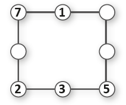5. Em seu caderno, represente as situações a seguir por meio de uma expressão numérica e calcule o que se pede.
a) No colégio de Junior havia 4 turmas de 1.º ano com 26 alunos cada, 3 turmas de 2.º ano com 27 alunos cada e 5 turmas de 3.º ano com 22 alunos cada uma. Sabendo que desse total de alunos, 12 pediram transferência na metade do ano, quantos alunos terminaram o ano entre as turmas de 1.º, 2.º e 3.º anos?
b) João, Luciana e Eliane foram ao restaurante almoçar e pediram 4 sucos que custam 5 reais cada um, 3 pratos executivos de 20 reais cada um e 2 sobremesas de 8 reais cada uma. Ao final decidiram dividir a conta igualmente entre os três. Quanto cada um pagou?
c) Para presentear as crianças de uma creche no Dia das Crianças, um grupo de amigas comprou 16 bolas de 23 reais cada uma, 12 bonecas de 35 reais cada uma e 18 carrinhos de 28 reais cada um. Elas parcelaram o valor total em 4 prestações. Qual é o valor de cada prestação?
6. Em seu caderno, calcule o valor das seguintes expressões:
a) (14 + 6) ∙ 5 - 11
b) 105 - (32 + 63 : 7)
c) 12 + 5 ∙ (38 - 10 ∙ 3) : 2
d) [50 - 2 ∙ (10 - 4) + 22] - 82 : 2
e) 180 - 3 ∙ {30 + [25 : 5 + (13 - 7) + 2] - 9}
74
7. Utilizando uma calculadora, identifique quais as teclas com os sinais de +, –, × ou ÷ devem ser usadas entres os números para tornar as expressões verdadeiras.
a)
b)
8. (OBMEP) Daniela fez um quadro mostrando a quantidade de água que gastava em algumas de suas atividades domésticas.

► Para economizar água, ela reduziu a lavagem de roupa a 3 vezes por semana, o banho diário a 5 minutos e a lavagem semanal do carro a apenas um balde de 10 litros. Quantos litros de água ela passou a economizar por semana?
a) 1 010
b) 1 110
c) 1 210
d) 1 211
e) 1 310
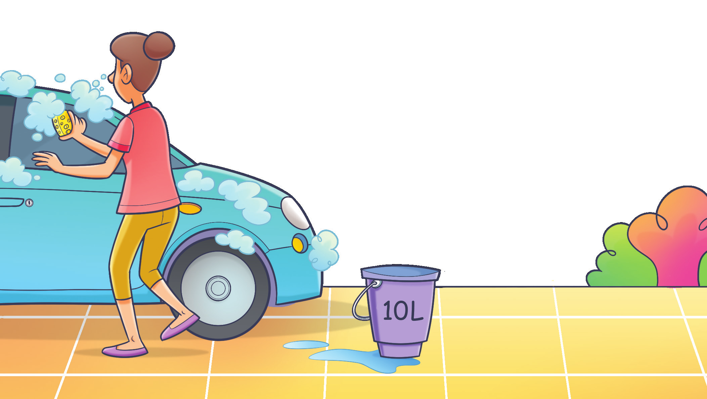